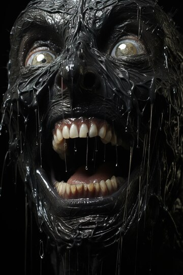

Raised in a prison on the island of Santa Prisca for the crimes of his father, Bane dedicated his life to honing his mind and body into a perfect weapon.
In order to wage his unending war on injustice, Batman has developed his body as perfectly as he has his mind.
But there’s one man who’s broken him. A man who stands in many ways as his exact opposite—a physical marvel and a genius without peer. But whereas the Dark Knight was born to fight crime, Bane was destined for a life of corruption.

The sadistic Roman Sionis only cares about two things: hurting people, and total control of Gotham City’s criminal underworld. If he can use one to accomplish the other, then all the better.

Aquaman's greatest enemy is the scourge of the seven seas, David Hyde, whose heart is as cold as the ocean depths he hunts. Considered one of Aquaman’s greatest enemies, Black Manta has a singular hatred for the King of Atlantis. For decades, Manta’s true name and motives were shrouded in mystery, hidden behind his menacing oversize helmet. In modern times, however, his true motivations have been revealed.